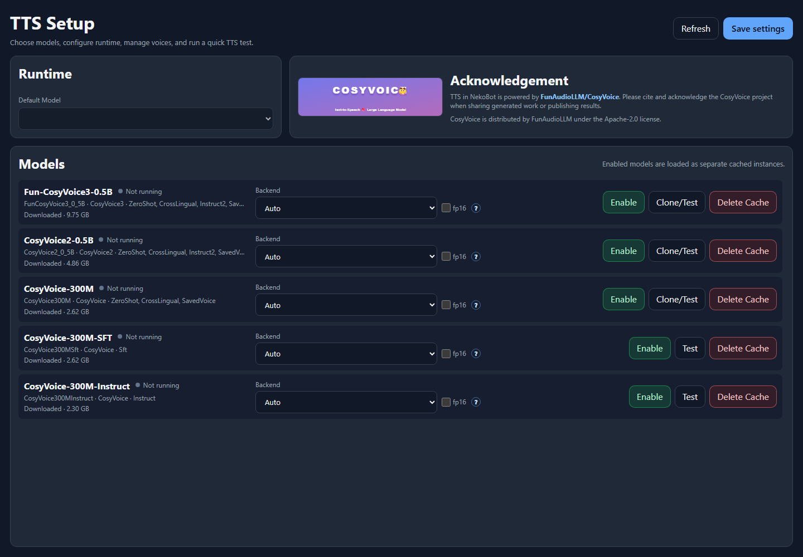

Voice
TTS Setup
NekoBot can use local TTS models for generated voice sources when enabled.
Model Setup

- Open TTS Setup.
- Enable a model.
- Choose backend settings such as CPU or CUDA.
- Use Test or Clone/Test to verify voices.
Example: TTS Source From Chat
- Enable a TTS model and verify that it is running.
- In Overlay Setup, add a TTS source to a box.
- Select a voice and set Message to
{{message.text}}. - Bind the box to a command trigger such as
!tts. - When the command arrives, NekoBot resolves the trigger tokens and generates the audio source.
Acknowledgement
TTS support is powered by CosyVoice. Please cite and acknowledge the CosyVoice project when sharing generated work or publishing results.